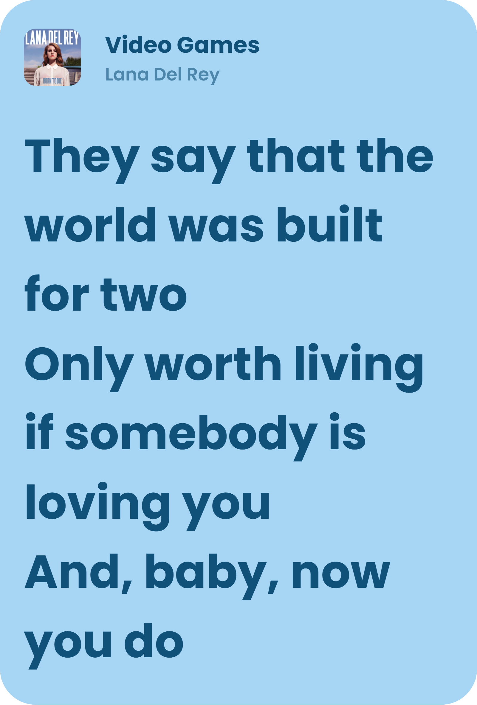

Born to Die es el segundo álbum de estudio de Lana Del Rey, si se cuenta su primer lanzamiento bajo el nombre Lizzy Grant, y su primer álbum con los sellos Interscope Records y Polydor Records. Fue publicado el 27 de enero de 2012 y marcó un momento decisivo en su carrera musical. El disco combina pop, hip-hop, arreglos orquestales y una estética cinematográfica inspirada en el Hollywood clásico, la nostalgia estadounidense y el romanticismo trágico.

Born to Die no es solamente un álbum de pop, sino una obra que construye un universo visual y narrativo propio. Sus canciones exploran el amor, la soledad, la fama, la juventud y el lado oscuro del sueño americano. La voz profunda de Lana, las melodías dramáticas y los arreglos orquestales crean una atmósfera que recuerda a una película antigua.
En Born to Die, muchas canciones pueden interpretarse como pequeñas historias sobre personajes que buscan amor, reconocimiento o una forma de escapar de su realidad. Lana Del Rey utiliza referencias cinematográficas y narrativas para explorar las contradicciones de las relaciones humanas.
Uno de los momentos más importantes de esta era fue Video Games, canción que se dio a conocer en 2011, antes del lanzamiento del álbum. Su videoclip combinaba imágenes de archivo, fragmentos de la cultura popular y grabaciones de Lana, creando una estética nostálgica y
aparentemente casera que contribuyó a definir su identidad artística.
En una entrevista con British GQ, Lana Del Rey explicó que buena parte de Born to Die estaba relacionada con sus experiencias de juventud, particularmente con su relación problemática con el alcohol y sus años viviendo en Nueva York. Esta información permite comprender que detrás de su estética cinematográfica también existían recuerdos y conflictos personales.
Aunque Born to Die alcanzó un enorme éxito comercial, su recepción inicial fue bastante polarizada. Algunos críticos cuestionaron su autenticidad y la construcción de su personaje artístico, mientras otros destacaron su propuesta estética y su particular estilo vocal. Con el paso de los años, el álbum adquirió una posición mucho más influyente dentro del pop alternativo y comenzó a ser reconocido como uno de los trabajos que ayudaron a transformar el sonido de la década de 2010.
En una época dominada por producciones electrónicas y canciones de gran energía, Lana Del Rey presentó una imagen femenina más melancólica, vulnerable y cinematográfica. Su propuesta contrastaba con la estética de muchas estrellas del pop contemporáneo. En lugar de proyectar únicamente independencia y triunfo, sus letras y su imagen exploraban las contradicciones entre el deseo, la fragilidad, la dependencia y la idealización romántica.